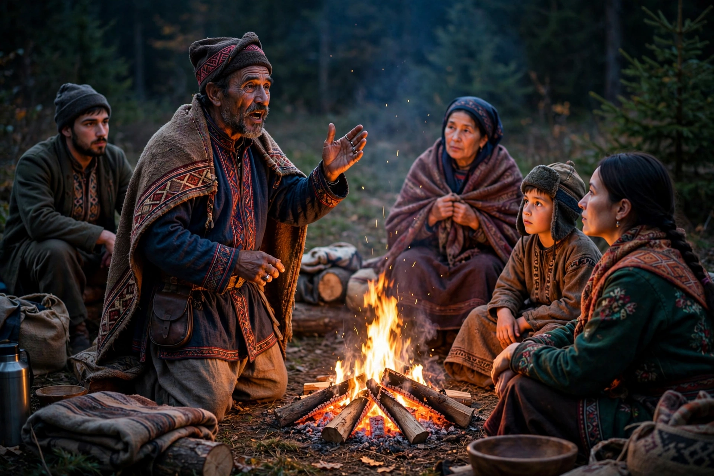

Native American mythology

Native American mythology is the body of oral traditions held in common by many Indigenous peoples of the Americas. There is no single unified mythology: the hundreds of distinct nations and language groups maintain their own bodies of sacred narrative, though recurring motifs — creation from water or darkness, culture heroes, and animal persons — appear across wide areas.
Common themes
Many traditions begin with an earth-diver creation, in which an animal dives into primordial waters to fetch mud from which the earth is formed, a motif found among Iroquoian, Algonquian and some Plains peoples. In the Southwest, narratives of emergence describe the people ascending through a series of underworlds into the present world, while Northwest Coast traditions centre on Raven, a trickster-transformer who releases the sun, moon and stars. Trickster figures such as Coyote (Plains and Plateau), Nanabozho (Anishinaabe) and Iktomi (Lakota) are simultaneously creators, fools and transgressors of social boundaries.
Regional traditions
The Haudenosaunee recount the Sky Woman falling to a water-covered earth; Cherokee tradition tells of the earth formed from mud under the Great Buzzard's wings; Navajo (Diné) narratives describe Changing Woman and the Hero Twins; Pueblo peoples maintain elaborate katsina traditions linking ancestors, rain and the ceremonial calendar. In Mesoamerica and the Andes — usually treated separately — Aztec, Maya and Inca mythologies were recorded in codices and colonial chronicles as well as oral transmission.
Preservation
Colonisation, forced removal and boarding-school suppression of Indigenous languages severely disrupted oral transmission. From the nineteenth century, ethnographers recorded many narratives, sometimes imperfectly; today, tribal nations lead revitalisation efforts, and some narratives remain restricted — told only in certain seasons or to initiated audiences.